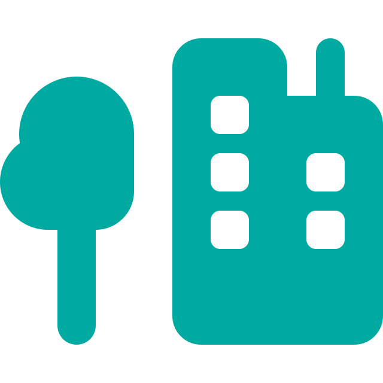

The City
The city of Patras • Travel to & from Patras • Accommodation options • Getting around
The city of Patras
Patras is Greece's third-largest city and the regional capital and largest city of Western Greece, 215 km (134 mi) west of Athens. The city is built at the foot of Mount Panachaikon, overlooking the Gulf of Patras.
Every year, in February, the city hosts one of Europe's largest carnivals. Notable features of the Patras Carnival include its mammoth satirical floats and balls and parades, enjoyed by thousands of visitors.
If you care to find out more about our city you can have a look at the official "visit Greece" page for Patras.
Travel to & from Patras
By train from Athens
You can reach Patras by train from Athens' Eleftherios Venizelos International Airport. Note that you will have to change trains and the last part of the route is done by bus but the whole route, including the last bus, can be booked under a single ticket and is operated by Hellenic Train (TrainOSE), the greek railway organization.
Tickets can be booked either online in Hellenic Train's website or at the airport's train station.
By bus from Athens
You can also reach Patras from Athens by bus. From Athens' Eleftherios Venizelos International Airport you could either take the bus X93 or a taxi to KTEL Achaias at the Kifissos Intercity Bus Station and from there the bus to Patras. Note that the route from the airport to the intercity bus station can take up to 2 hours depending on the traffic.
Tickets for the X93 bus can be purchased at the airport or, once inside the bus, you can simply tap your credit/debit card at the blue ticket reader.
Tickets for the bus to Patras can be booked either online at KTEL Achaias' page or directly at the bus station.
By ferry from Italy
Patras can also be reached by ferry from Italy, from the ports of Ankona, Bari, Brindisi and Venice.
Accommodation options
Here are some suggestions for hotels. In all cases, please use the code CT2027. The information below is subject to room availability.
Options in Rio (closer to the conference venue)
- Castello Hotel: starting at 90€ per night with breakfast.
- Achaia Beach Hotel (the link offers the CT2027 prices directly); bus connection to the venue.
Options in Patras (bus or train transportation to the conference venue)
- Galaxy City Center Hotel: starting at 60€ per night with breakfast.
- Patras Smart Hotel (the link offers the CT2027 prices directly).
- CityLoft Patras Boutique Hotel: starting at 70€ per night without breakfast; option to share a room.
- Moxy Patra Marina: 10% discount on the website's prices using the code.
- My Way Hotel & Events: starting at 92€ per night with breakfast; available only up to June 25.
Getting around in Patras
Taxis have a minimum fare of 4€. For online bookings there is Freenow by Lyft but not Uber. Bus tickets can be purchased at the city center (reg. price 1,20€) or directly from the bus driver for a slightly higher price (reg. price 2€).